Servidor Web é um programa de computador responsável por aceitar pedidos HTTP de clientes, geralmente os navegadores, e servi-los com respostas HTTP, incluindo opcionalmente dados, que geralmente são páginas web, tais como documentos HTML com objetos embutidos (imagens, etc.).
Os servidores web mais conhecidos e usados atualmente são: o Apache, também conhecido como Apache HTTP Server – servidor virtual do Linux, e o IIS (Internet Information Service) – Servidor da Microsoft.
O servidor Apache ou Servidor HTTP Apache é um dos mais bem-sucedido servidor web livre que existe. O Apache é responsável por disponibilizar páginas e todos os recursos que podem ser acessados pelo internauta. Envio de e-mails, mensagens, compras online e diversas outras funções podem ser executadas graças a servidores como o Apache
Log de dados é uma expressão utilizada para descrever o processo de registro de eventos relevantes num sistema computacional. Esse registro pode ser utilizado para restabelecer o estado original de um sistema ou para que um administrador conheça o seu comportamento no passado. Um arquivo de log pode ser utilizado para encontrar alguns problemas de forma rápida ou até mesmo ter um feedback sobre as atividades e desempenho do seu servidor web. No Apache Web Server, o arquivo de log de acesso é instalado no diretório /logs durante a instalação do Apache e no Linux tem o nome access_log.
Para instalação de um servidor web utilizaremos o CentOS, para isso utilizaremos o terminal.
Abra o terminal e como root (utilize o comando sudo su para entrar como root), digite o comando:
# yum install -y httpd
Esse comando irá instalar o pacote (o comando -y ira confirmar a instalação automaticamente)
OBS: Algumas versões do Linux, o comando para instalação é:
# service install -y httpd
ou
# apt-get install -y httpd
Após instalado, vamos iniciá-lo:
# service httpd start
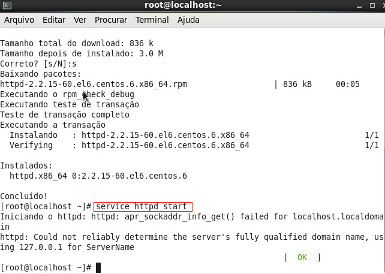
Agora vamos verificar se o apache está funcionando. Basta acessar o navegador e digitar localhost.
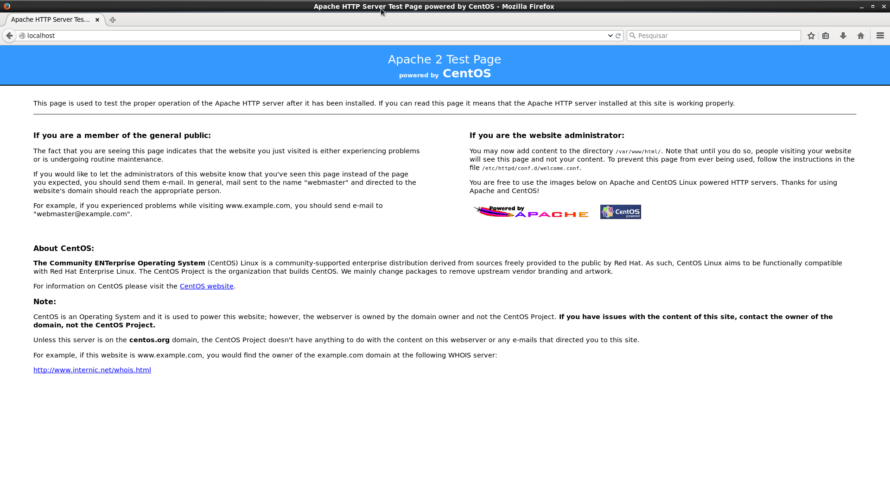
Virtual Hosts (sites virtuais) é um recurso que permite servir mais de um site no mesmo servidor. Podem ser usadas diretivas específicas para o controle do site virtual, como nome do administrador, erros de acesso a página, controle de acesso e outros dados úteis para personalizar e gerenciar o site.
Primeiro vamos configurar o arquivo de host, ele se encontra na pasta /etc/hosts. No terminal digite o comando echo para adicionar o ip e o site.
No meu caso ficará
# echo ‘127.0.0.1 gti.com.br www.gti.com.br’ >> /etc/hosts
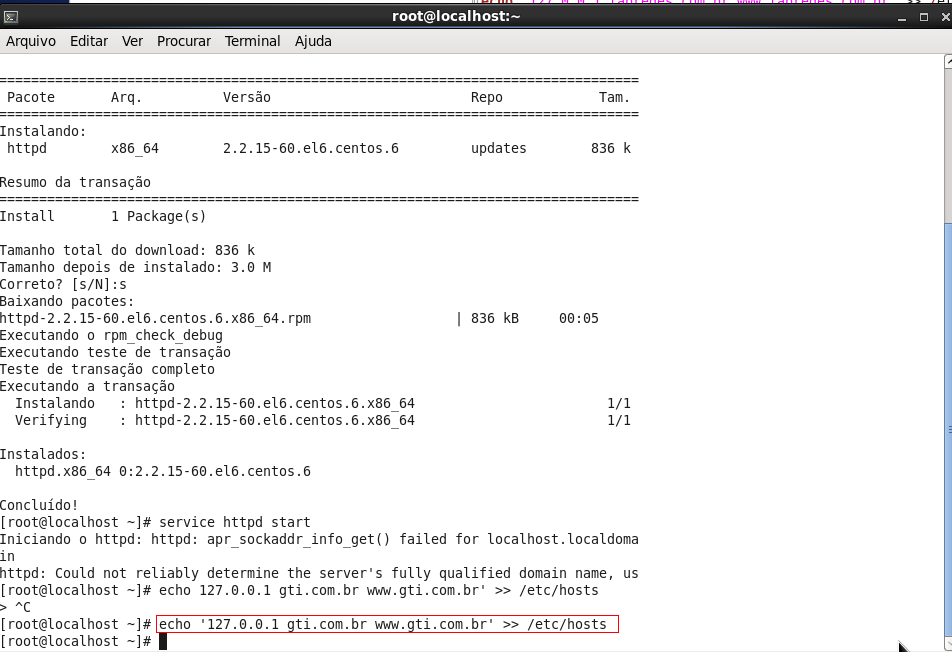
Para criar, configurar ou adicionar um domínio virtual (virtual host) ao seu servidor Apache é necessário editar o arquivo httpd.conf. Este arquivo é responsável pela configuração do servidor web Apache. Todas as configurações de modificações de acesso, restrições, permissões, entre outras, que forem alteradas no servidor Apache, devem ser feitas nesse arquivo.
Para redirecionarmos o caminho no qual o index deve ler, precisa apenas alterar a linha do arquivo "httpd.conf" que possui o contexto "DocumentRoot". Assim dando um novo caminho para o servidor reconhecer o arquivo "index.html"
Agora vamos editar o arquivo httpd.conf
Utilizaremos o Gedit para edição do arquivo
# yum install -y gedit (instala o gedit)
# gedit /etc/httpd/conf/httpd.conf (Abre e edita o arquivo)
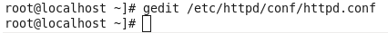
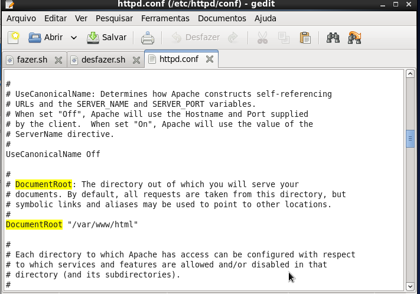
Por padrão a porta de acesso ao servidor vem 80, mas você pode alterar para outra de sua preferência. Procure a linha de comando NameVirtual Host *:80.
Agora vamos criar um arquivo html. O nome do arquivo onde o site vai ficar hospedado deve ter o nome de index.html, para que este possa ser reconhecido pelo servidor.
Criando o arquivo:
# echo ‘Teste Gti’ >> /var/www/html/index.html
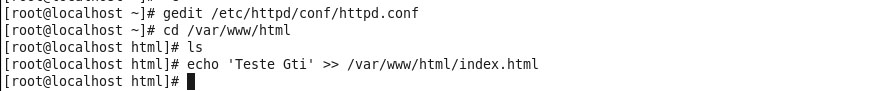
Agora vamos reiniciar o apache para que ele pegue as novas configurações
# service httpd restart
Agora abra o navegador para testar:
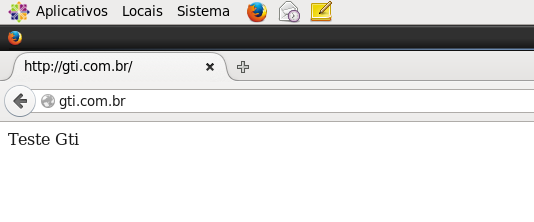
Abrimos o arquivo de configuração httpd.conf novamente:
# gedit /etc/httpd/httpd.conf
Dentro do Campo ifModule, faça as alterações na linha LogFormat (utilize ctrl+f para localizar), os códigos que não devem ser mostrados e acrescente os que serão visualizados, alguns desses códigos são:
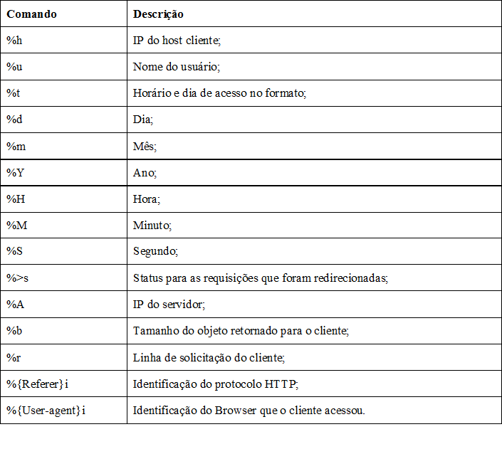
Então é só editá-la, escolhendo as configurações da sua preferência.
Exemplo:
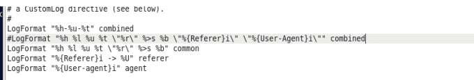
%h = É o endereço do IP
%u = É o nome do usuário.
%t = É a data e hora do acesso.
O acesso log é localizado na pasta
/var/log/httpd
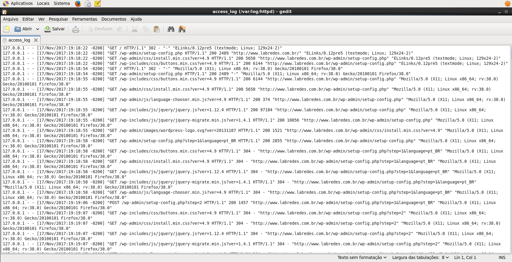
Formatação dos dados que serão armazenados no arquivo texto
Os dados foram filtrados diretamente do arquivo de log pelo programa Java que foi desenvolvido no projeto integrador, o programa lê o arquivo e trata as informações conforme a necessidade.
Para o programa ler os o arquivo é necessário usar a importar a classe BufferedReader.
import java.io.BufferedReader;
Determinar um separador de informações:
Figura 1
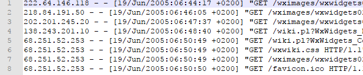
O arquivo de log possui as informações separadas por um “espaço”, sendo assim o separador para determinar a posição da busca da informação no arquivo será um espaço vazio “ ”.
Criar um ArrayList para armazenar as informações lidas do arquivo, é necessário a importação.
import java.util.ArrayList;
O construtor da classe Log ira determinar a sequência que as informações serão gravadas no ArrayList.
Figura 2
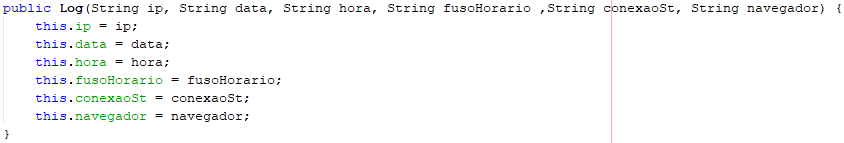
Por exemplo, observando os dados da tabela 1 e figura 3:
A variável “ip” é a primeira posição do ArrayList que recebe o primeiro array lido pelo BufferedReader que é o array[0]
A variável “data” data será a segunda posição do ArrayList que recebera o segundo array lido pelo BufferedReader que é o array[3]. substring(13, 21)E assim subsequente como na tabela abaixo.
Tabela 1
|
ip |
data |
hora |
fuso horario |
concexaoSt |
navegador |
|
array[0] |
array[3].substring(1, 12) |
array[3].substring(13, 21) |
array[4].replace("]", "") |
array[8] |
array[11].replace("\", "") |
Note que os números entre colchetes array[“8”] determina a posição lida no arquivo, definida pelo separador “ “ e não do ArrayList.
Sendo que o a quantidade de arrays que determinará qual posição do Arraylist será usada.
Figura3
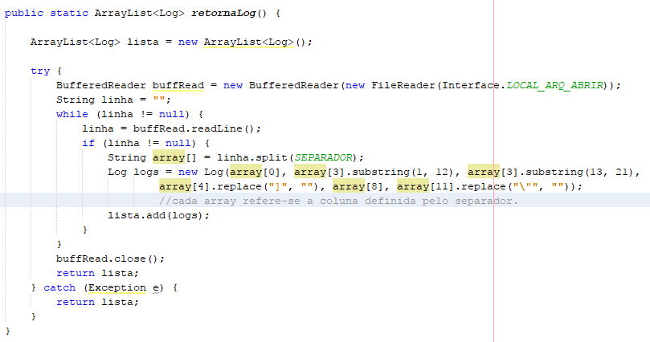
A função “.readLine()” faz com que toda linha do arquivo seja lida.
A função “.split(SEPARADOR)” separa as informações de acordo com o separador “ ”.
O BufferedReader usa um sistema de arrays, cada array recebe um valor “[0]”, este valor que determina a posição do separador “ ”, os caracteres na linha serão lidos do arquivo até que o separador seja atingindo, assim que o separador é atingindo os caracteres serão gravados na primeira posição do ArrayList, o próximo array independente da posição de leitura será gravado na segunda posição do ArrayList e assim por diante.
222.64.146.118 - - [19/Jun/2005:06:44:17 +0200] "GET /wximages/wxwidgets02-small.png HTTP/1.1" 200 12468
Exemplo: Como referência a figura 3 e a linha de log acima. O primeiro separador é a “posição 0” array[0], e será gravado na primeira posição do ArrayList os caracteres: 222.64.146.118.
A leitura continuará até atingir segundo separador “posição 1”, não tendo array determinado será ignorado e a leitura passa para o próximo separador “posição 2”, que também não possui um array determinado.
No separador subsequente “posição 3” array[3] que possui a sequência de caracteres: [19/Jun/2005:06:44:17, porém este array possui a função “.substring(1, 12)” que fará com que os caracteres gravados na segunda posição do ArrayList seja a partir do caractere 1 até o caractere 12, sendo assim a informação na segunda posição do ArrayList será: 19/Jun/2005.
A terceira posição do ArrayList será novamente a “posição 3” array[3] com a função “.substring(13, 21)” os caracteres serão buscados a partir do caractere 13 até o caractere 21 a informação gravada na terceira posição do ArrayList será: 06:44:17.
O próximo separador será “posição 4” array[4].replace("]", "") este array possui a função “.replace("]", "")” e como o próprio nome diz substitui o caráter “[“ por valor nenhum “” e dados gravados na quarta posição do ArrayList será: +0200.
Como não possui nenhum array determinado até a posição 8, a leitura das posições 5, 6 e 7 serão ignoradas até atingir a “posição 8” array[8], os dados gravados na quinta posição do ArrayList será: 200.
Desta forma a leitura é feita dados até o ultimo array determinado ou o final da linha for atingido.
Como toda a função esta dentro de um laço de repetição que é executado enquanto houver uma linha valida, desta forma é repedida toda a ação demostrada acima até que todas as linhas sejam lidas, e resultado será como mostrado na Figura 4.
Figura 4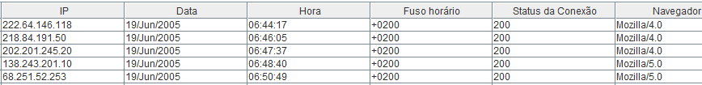